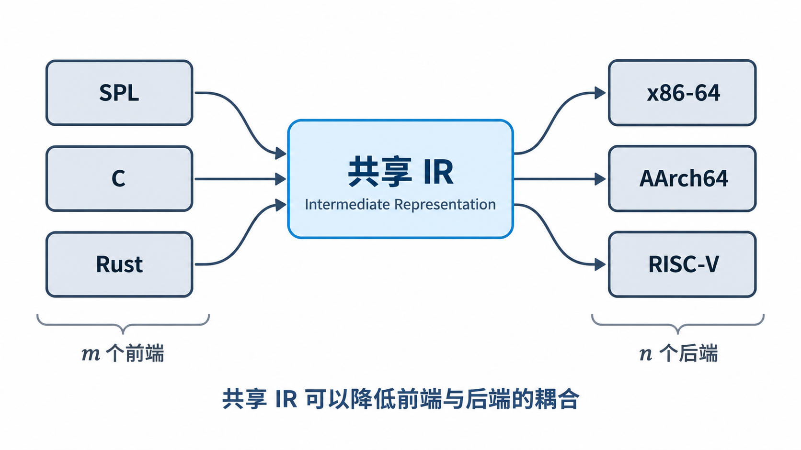

Week 10 — From Semantics to LLVM IR¶
上一周，我们已经能够分析表达式的含义：一个表达式可能表示对象的 存储位置，也可能产生一个 值；赋值会修改对象的状态，而后续计算可以读取修改后的值。
本周换一个问题：如果编译器已经理解了源程序的含义，怎样把这些行为写成能够继续编译、最终执行的代码？
我们将使用 LLVM IR 来回答。
先看贯穿本周的 SPL 程序。它计算一笔订单的最终金额：商品单价乘数量，加上运费，再减去优惠金额。
int finalPrice(int unitPrice, int quantity) {
int amount;
amount = unitPrice * quantity;
amount = amount + 6;
amount = amount - 2;
return amount;
}
int main() {
return finalPrice(5, 3);
}
我们知道 main 最终返回 19。接下来要做的，是让编译器生成一种能够 保留这一行为 的表示。
1. 为什么引入 Intermediate Representation？¶
假设我们要支持 m 种源语言和 n 种目标机器（如 x86-64、AArch64、RISC-V）。如果每一种源语言都直接为每一种目标机器实现一套翻译逻辑，可能需要维护约 m × n 种组合。
如果让所有前端先生成统一的 Intermediate Representation（IR，中间表示），再由不同后端把 IR 转换成目标机器代码，就可以将体系结构划分成 m 个前端与 n 个后端：

它说明共享 IR 可以降低前端和后端的耦合。
本课程采用 LLVM IR：我们的工作是把经过解析和语义检查的 SPL 程序翻译成 LLVM IR，再由 LLVM 工具链完成后续的机器代码生成。
现在，问题变成了：如何把 SPL 中的运算、赋值和返回写成 LLVM IR？
2. 从一个最简单的函数开始¶
在订单程序中，第一步是计算 unitPrice * quantity。我们暂时把这一步取出来，只看一个没有局部可变变量的函数。
SPL 源码：
对应的完整 LLVM IR：
define i32 @product(i32 %unitPrice, i32 %quantity) {
entry:
%result = mul i32 %unitPrice, %quantity
ret i32 %result
}
2.1 函数定义：先看清一段 IR 的整体结构¶
上面两段代码都在定义同一个 product 函数。LLVM IR 同样有函数名、参数、函数体和返回值，只是要求把类型和计算写得更加明确。
观察完具体例子后，我们可以把常见函数定义概括成下面的通用格式（为方便入门，暂时省略函数属性等可选内容）：
这里 <...> 表示需要替换的占位内容，不是实际要输入的 LLVM IR 语法；... 表示可以省略或重复的部分。无参数函数可写为 @f()，函数体内至少需要一个基本块。
define表示定义函数；i32等写在@前面的是返回类型。@函数名是函数的全局名称；参数通常写作“类型 +%开头的局部名称”，用逗号分隔。{ ... }中是函数的基本块；每个基本块以一条终结指令结束。entry:是一个基本块的标签，表示从这里开始执行该基本块中的指令。
将这些位置代入刚才的源码，就得到 define i32 @product(i32 %unitPrice, i32 %quantity)，而 entry: 是它的基本块标签。
| LLVM IR 中的写法 | 含义 |
|---|---|
define i32 @product(...) |
定义函数，返回一个 32 位整数 |
i32 %unitPrice |
名为 %unitPrice 的 32 位整数参数 |
entry: |
函数中一个基本块的入口标签 |
%result = mul i32 %unitPrice, %quantity |
计算两个整数的乘积，并为结果命名 |
ret i32 %result |
将计算结果作为函数返回值 |
这里先认识两条重要的指令：
ret：结束当前函数的执行，并将指定的值返回给调用者。call：调用另一个函数，稍后我们会结合完整程序介绍。
特别注意，ret 并不是跳转到当前函数中的下一个基本块，而是结束当前函数。当被调用函数执行 ret 后，调用者会从函数调用指令之后的位置继续执行。
关于基本块的组织方式，我们暂时只需要知道它是函数内部组织指令的基本单位，后面会结合具体程序进一步介绍。
2.2 整数运算指令：操作码、类型和操作数¶
先不需要记住一大套指令。只要能读懂刚才的 mul，就能举一反三。
例如，源表达式：
可以由这一条 LLVM IR 指令表达：
对本周常见的二元整数运算，可以提炼出统一格式：
这里的 iN 是整数类型的抽象写法，实际写 IR 时要把 N 换成位宽，例如 i32、i64，不能原样写 iN。
mul是操作码：告诉 LLVM 执行乘法。i32是操作数的整数类型，表示 32 位整数。%unitPrice、%quantity是两个操作数；它们也可以是类型匹配的整数常量。%result是这次计算产生的值的名字，不意味着分配内存。
SPL 中常见的整数运算，在 LLVM IR 中有这些直接对应关系：
| SPL 表达式 | LLVM IR 操作码 | 说明 |
|---|---|---|
a + b |
add |
整数加法 |
a - b |
sub |
整数减法 |
a * b |
mul |
整数乘法 |
a / b |
sdiv |
有符号整数除法 |
a % b |
srem |
有符号整数取余 |
LLVM IR 是强类型的：例如 add i32 的两个操作数都必须是 i32，不能把 i16 和 i32 直接混合相加。改变位宽需要显式的类型转换指令。
2.3 类型与 Value：只引入读 IR 必需的术语¶
i32 等整数类型中的数字表示位宽。我们本周常见的 i1、i8、i16、i32、i64 分别表示 1、8、16、32、64 位整数，其中课程 SPL 的 int 在本讲义中对应 i32。
类型告诉我们一个值应该如何被解释，以及哪些指令允许使用它。
LLVM IR 中，一个计算指令可以产生一个 Value（值），这个值可以被后续指令使用。
例如：
这里：
%product是乘法产生的值。%total是加法产生的值。ret使用%total作为返回值。
需要注意，%product 和 %total 都不是必须对应某个源程序中的变量。它们只是 LLVM IR 中对计算结果的命名。
在 LLVM IR 中，@ 用于引出函数、全局变量等全局名称，% 用于引出局部值等名称。
这里先记住一个重要特点：普通计算指令产生的 Value 具有自己的名称，后续指令可以反复使用它。
接下来，我们就会发现，这个特点与源语言中的可变变量之间存在一个有意思的差异。
3. 为什么不能直接把源变量翻译成同名 IR 变量？¶
回到订单程序中的 amount。它不是计算一次就结束了，而是会连续修改。
SPL 源码（节选）：
3.1 第一次尝试：反复向同一个 %amount 赋值¶
如果把源语言的赋值照搬过来，我们可能会写出下面的东西。
错误的 LLVM IR 尝试（故意写错，不能编译）：
%amount = mul i32 %unitPrice, %quantity
%amount = add i32 %amount, 6
%amount = sub i32 %amount, 2
ret i32 %amount
问题就在于：同一个 %amount 在 IR 中被反复赋值。
LLVM IR 不允许同一个 SSA 名称在不同指令中被重复定义。为什么？
3.2 静态单赋值（SSA）：一个名字只能定义一次¶
LLVM IR 使用 Static Single Assignment（SSA，静态单赋值） 形式组织指令产生的值。
所谓“单赋值”，指的是：
在静态的 LLVM IR 中，每个 SSA 名称只能在一处被定义，之后可以被反复使用，但不能再被另一条指令重新定义。
这里需要把源语言中的变量、对变量的赋值，以及 LLVM IR 中的 SSA Value 区分开：
- SPL 的
int amount;：声明一个名为amount的局部变量。 - SPL 的
amount = amount + 6;：给已经存在的变量重新赋值，修改这个对象保存的当前值。 - LLVM IR 的
%v2 = add i32 %v1, 6：将加法结果定义为一个新的 SSA Value%v2。这个名字以后可以反复使用，但不能再被另一条指令重新定义。
这里的“静态”强调：单赋值约束针对程序文本中的定义位置，不是说函数只能执行一次。
例如，函数每次被调用时，同一条指令都可以重新执行并计算出新的结果；只是不能在 IR 文本中用同一个 SSA 名称再写一条赋值指令。
为什么要采用这种形式？
我们可以先看下面的合法写法。
还是同一段 SPL 源码：
使用不同 SSA 名称的合法 LLVM IR：
define i32 @finalPrice(i32 %unitPrice, i32 %quantity) {
entry:
%amount1 = mul i32 %unitPrice, %quantity
%amount2 = add i32 %amount1, 6
%amount3 = sub i32 %amount2, 2
ret i32 %amount3
}
三个名字虽然都来自源代码中的 amount，在 LLVM IR 中却代表三个不同时间得到的值：
| 源程序执行到哪里 | amount 当时的含义 |
LLVM IR 中对应的值 |
|---|---|---|
| 刚乘完单价和数量 | 商品金额 | %amount1 |
| 加完运费 | 金额 + 6 | %amount2 |
| 减完优惠 | 最终金额 | %amount3 |
可以发现，LLVM IR 将源程序中一个变量在不同位置的当前值，表示成了多个不同的 SSA Value。
这里有一个非常重要的区别：
源程序中的变量可以反复赋值，但每一次赋值在直接 SSA 表示中都会产生一个新的 Value。
三个 Value 之间还存在明确的数据依赖：
每个 SSA Value 都有明确的定义位置和使用位置。这种形式使编译器更容易分析数据之间的依赖关系，并进行常量传播、死代码消除等优化。
需要注意，SSA 约束的是 LLVM IR 中 Value 的定义，并不禁止程序修改内存。后面我们会看到，store 可以多次修改同一块内存，而这些操作仍然符合 LLVM IR 的 SSA 规则。
4. 两种变量表示策略¶
刚才我们已经看到一种解决方案：当源程序中的变量被重新赋值时，生成一个新的 SSA Value，并更新该变量当前对应的 Value。
这种方式可以正确表示顺序执行程序。
但是，我们还可以采用另一种思路：
既然源程序中的变量可以反复修改，那么能不能让它始终对应一个固定的存储位置，每次赋值只修改这个位置中的内容？
当然可以。
这就是另一种常见的变量表示策略：使用 alloca、store 和 load 管理可变变量。
4.1 直接使用 SSA Value 表示变量¶
先回顾刚才的例子：
%amount1 = mul i32 %unitPrice, %quantity
%amount2 = add i32 %amount1, 6
%amount3 = sub i32 %amount2, 2
在这种方式下，源程序中的 amount 并不对应一个固定的内存地址，而是对应当前最新的 SSA Value。
从代码生成器的角度来看，可以维护一张变量映射表：
| 源变量 | 当前对应的 SSA Value |
|---|---|
amount（第一次赋值后） |
%amount1 |
amount（第二次赋值后） |
%amount2 |
amount（第三次赋值后） |
%amount3 |
每次遇到新的赋值，生成器就产生一个新的 SSA Value，并更新映射关系。
这里的映射表只是帮助理解的一种代码生成器实现方式，并不是 LLVM IR 的语法要求。
这种方式有几个明显的特点：
- 不需要为普通标量变量额外分配内存。
- 不需要通过
load和store读取、修改变量。 - 计算结果可以直接传递给后续指令。
- 数据依赖关系比较明确，便于后续分析与优化。
但是，它也给代码生成器提出了更高的要求。
在目前的例子中，程序只有一条顺序执行路径，变量当前对应哪个 Value 很容易确定。
如果程序中出现条件分支，不同分支可能产生不同的 Value；如果程序中出现循环，变量还可能在多次迭代之间传递不同的 Value。
这时，生成器就不能只简单地更新一张变量映射表了。
我们将在后续学习控制流时进一步解决这些问题。
4.2 使用 alloca、store 和 load 表示变量¶
现在考虑另一种方式。
我们可以让源程序中的 amount 始终对应同一个存储位置，每次赋值只修改这个位置中的内容。
这正是 alloca、store 和 load 这组指令适合解决的问题。
第一步：使用 alloca 为变量分配存储空间。
SPL 源码：
对应的 LLVM IR：
抽象成通用格式：
这里 <对象类型> 是要分配的对象类型，如 i32 或 [3 x i32]，不是 alloca 返回值的类型。
alloca i32 在当前函数的栈上分配一块能够容纳 i32 的内存，并返回它的地址。
因此：
%amount_addr的类型是ptr，表示地址，而不是一个i32整数。%amount_addr只接收一次alloca返回的地址值。%amount_addr指向的内存内容可以在后续被反复修改。alloca本身不等于初始化，刚分配的存储空间不能直接当成已经保存了有效整数的变量使用。
这里的 ptr 是 LLVM IR 表示内存地址的类型。SPL 没有 C 风格的指针操作语法，不影响 LLVM IR 在内部使用地址。
这个区别非常关键：
同一个 SSA 名称不能重新定义，不代表它指向的内存内容不能被反复修改。
alloca 不仅能分配单个整数的空间，也可以为局部数组分配空间。
例如：
SPL 源码：
对应的 LLVM IR 片段：
[3 x i32] 表示由三个 i32 元素组成的数组类型。这里的 alloca 为整个数组分配存储空间，返回的 %values_addr 仍然是 ptr 类型的地址。
第二步：使用 store 向存储位置写入值。
SPL 源码：
LLVM IR 片段（假设前面已经生成 %amount_addr = alloca i32）：
先计算出 %product，然后把这个 i32 值写入 %amount_addr 所指向的内存空间。
store 的通用格式：
例如：
其中第一个操作数是要写入的整数值，第二个操作数是目标地址。
store 没有 %结果名 = 部分，因为它不产生一个供后续指令引用的计算结果。它产生的是内存写入效果。
注意，store 修改的是 %amount_addr 指向的内存内容，而不是重新定义 %amount_addr。
第三步：使用 load 从存储位置读取当前值。
SPL 源码：
同一个名字在赋值语句中承担了不同角色：右边的 amount 要读取当前值，左边的 amount 要确定写入位置。这就接上了 Week 9 的 Lvalue、Lvalue Conversion 与赋值的副作用。
LLVM IR 片段：
读取内存的通用格式：
这里：
load i32, ptr %amount_addr：从指定地址读取一个i32，将读取到的值定义为新的 SSA Value%old。add i32 %old, 6：使用读取到的整数进行加法，并产生新的 SSA Value%withFee。store i32 %withFee, ptr %amount_addr：将新值写回同一块内存。
与 store 不同，load 会产生一个新的 Value，因此左侧需要一个新名称。
特别注意，%old 只是某一次读取所得到的整数值。如果后来内存中的内容发生变化，%old 不会跟着改变。
我们可以将这几个概念放在一起理解：
| 名字或对象 | 表示的内容 | 是否可以改变？ |
|---|---|---|
%amount_addr |
一个内存地址 | SSA 名称不能重新定义 |
%old |
某次读取到的整数值 | SSA 名称不能重新定义 |
%withFee |
一次加法产生的整数值 | SSA 名称不能重新定义 |
%amount_addr 指向的内存 |
保存 amount 当前值的空间 |
可以通过 store 反复修改 |
为什么这仍然符合 SSA？
每次 load 和算术运算都会产生一个新的 SSA Value；每次 store 修改的是内存状态，而不是向旧 SSA 名称重新赋值。
因此，即使同一块内存被反复写入，LLVM IR 仍然符合 SSA 的要求。
4.3 两种策略有什么区别？¶
现在，我们已经有了两种正确的方式来表示源程序中的可变变量。
它们的核心区别在于：
- 直接 SSA Value：让源变量对应当前最新的计算结果。
- 内存表示：让源变量始终对应一个固定的存储位置，通过读写内存获取和更新当前值。
我们可以从几个方面比较它们：
| 对比维度 | 直接 SSA Value | 内存表示 |
|---|---|---|
| 变量对应什么 | 当前 SSA Value | 固定内存地址 |
| 赋值如何实现 | 产生新的 SSA Value，更新映射 | 使用 store |
| 读取如何实现 | 直接使用当前 Value | 使用 load |
| 变量管理 | 维护变量当前对应的 Value | 维护变量对应的地址 |
| 额外内存读写 | 不需要额外的变量存储读写 | 需要相应的 load 和 store |
| 代码生成 | 顺序计算较直接，复杂控制流下需要额外处理 | 对可变变量的读写规则比较统一 |
| 数据依赖 | 直接体现在 Value 的使用关系中 | 部分依赖关系通过内存读写体现 |
那么，一个很自然的问题就出现了：
既然使用 alloca、store 和 load 可以统一管理可变变量，为什么还需要直接 SSA Value？
原因在于，两种策略各有适用场景。
直接使用 SSA Value 时，不需要额外的内存读写操作，计算结果之间的数据依赖也更加明确。这种表示非常适合直接表达计算过程。
但对于代码生成器来说，直接处理变量当前对应哪个 SSA Value，需要维护相应的映射关系。当程序出现复杂控制流时，还需要处理不同执行路径产生的值。
使用内存表示时，生成器可以对可变局部变量采用一套相对统一的规则：
- 声明变量时分配存储位置。
- 赋值时向对应地址写入值。
- 使用变量时从对应地址读取值。
这样，生成器不需要在每次赋值时改变变量对应的地址，变量管理会更加直接。
不过，这种方式也可能产生额外的内存读写指令。
因此，我们不能简单地说哪一种方式绝对更好。它们实际上体现了代码生成器在实现复杂度与 IR 表示形式之间的不同选择。
还有一个重要的实践问题：
在真正的编译器中，是否会一直保留这些 alloca、load 和 store？
不一定。
LLVM 提供了 mem2reg（Memory to Register）优化过程，可以将符合条件的局部内存变量提升为 SSA Value。
简单来说，前端可以先使用内存读写的方式生成比较容易实现的 LLVM IR，再让 LLVM 优化器将适合转换的内存变量转换为直接的 SSA Value。
转换过程中，如果不同执行路径产生了不同的值，还可能需要引入 phi 指令。
这也说明，使用内存表示并不是放弃 SSA，而是一种更容易生成可变变量代码的前端策略。
我们将在 Week 12 学习控制流时，进一步理解不同执行路径上的 Value 如何合并，以及 phi 为什么会出现在 LLVM IR 中。
5. 完整程序：使用两种策略翻译 LLVM IR¶
现在回到开头的 SPL 程序，将之前学习的内容组合起来。
5.1 使用内存表示的完整 LLVM IR¶
SPL 源码：
int finalPrice(int unitPrice, int quantity) {
int amount;
amount = unitPrice * quantity;
amount = amount + 6;
amount = amount - 2;
return amount;
}
int main() {
return finalPrice(5, 3);
}
选择内存表示策略，可以得到：
define i32 @finalPrice(i32 %unitPrice, i32 %quantity) {
entry:
%amount_addr = alloca i32
%product = mul i32 %unitPrice, %quantity
store i32 %product, ptr %amount_addr
%old1 = load i32, ptr %amount_addr
%withFee = add i32 %old1, 6
store i32 %withFee, ptr %amount_addr
%old2 = load i32, ptr %amount_addr
%discounted = sub i32 %old2, 2
store i32 %discounted, ptr %amount_addr
%answer = load i32, ptr %amount_addr
ret i32 %answer
}
define i32 @main() {
entry:
%result = call i32 @finalPrice(i32 5, i32 3)
ret i32 %result
}
把主要指令对应回源代码：
| SPL 代码或行为 | 对应 LLVM IR |
|---|---|
定义 finalPrice |
define i32 @finalPrice(...) |
int amount; |
alloca i32 |
计算 unitPrice * quantity |
mul i32 |
向 amount 赋值 |
store |
将 amount 用在右侧表达式中 |
load |
amount + 6、amount - 2 |
add、sub |
return amount; |
load 后 ret |
finalPrice(5, 3) |
call i32 @finalPrice(i32 5, i32 3) |
这里保留了最后一次 load，是为了展示统一的变量读取策略。
实际上，因为最后一次 store 写入的值就是 %discounted，中间没有其他修改，所以也可以直接：
两种写法在这个具体程序中具有相同的返回结果。
5.2 使用直接 SSA Value 的完整 LLVM IR¶
对于完全相同的 SPL 源程序，我们也可以不使用 alloca，直接使用 SSA Value 表示变量。
对应的 LLVM IR：
define i32 @finalPrice(i32 %unitPrice, i32 %quantity) {
entry:
%amount1 = mul i32 %unitPrice, %quantity
%amount2 = add i32 %amount1, 6
%amount3 = sub i32 %amount2, 2
ret i32 %amount3
}
define i32 @main() {
entry:
%result = call i32 @finalPrice(i32 5, i32 3)
ret i32 %result
}
对比两份 IR，可以发现：
- 两份 IR 都正确表示了
amount的连续赋值。 - 第一份使用固定地址，通过
load和store更新变量。 - 第二份通过不同的 SSA Value 表示变量在不同位置的当前值。
- 两份 IR 都符合 LLVM IR 的 SSA 规则。
这也说明：
编译器的任务是保留源程序的语义，而不是逐字复制源程序中的变量和赋值形式。
5.3 函数调用与返回：call 和 ret¶
在刚才的完整程序中，我们第一次同时看到了 call 和 ret。
先看函数调用：
它表示：
- 调用名为
finalPrice的函数。 - 传入两个
i32类型的实参，分别是5和3。 - 函数返回一个
i32类型的结果。 - 将返回结果定义为新的 SSA Value
%result。
因此，有返回值的函数调用可以概括为：
接下来：
表示将 %result 作为当前函数的返回值。
这里需要明确一个问题：
ret 到底返回到哪里？
我们以 main 调用 finalPrice 为例：
当执行到 call 时，程序会进入 finalPrice 函数执行。
当 finalPrice 执行：
它会结束当前 finalPrice 函数的执行，将返回值交还给调用者。
随后，程序回到 main 中，从 call 指令之后的位置继续执行。
也就是说，函数返回不是跳转到当前函数中的某个基本块，而是回到调用者中函数调用之后的位置。
对于没有返回值的函数，LLVM IR 使用 void 类型，调用和返回形式分别为：
以及：
注意，当前课程的 SPL 函数返回类型以项目语法规范为准；这里介绍 void 只是为了帮助理解 LLVM IR 的完整函数调用形式。
6. Basic Block：函数内部的指令如何组织？¶
在前面的两个完整程序中，我们都看到了：
这里的 entry: 并不是函数名，而是一个 Basic Block（基本块） 的标签。
可以先把 Basic Block 理解为：
一段从入口开始顺序执行，中途不发生控制流转移，最后由一条终结指令结束的指令序列。
LLVM 函数体由一个或多个基本块组成。
基本块可以概括为：
在我们的订单程序中，计算一直按照固定顺序执行，最终返回，因此每个函数只需要一个 entry 基本块。
以 finalPrice 为例：
- 基本块从
entry:开始。 - 块内依次执行
alloca、mul、store、load、add等操作。 - 最后通过
ret结束基本块，同时结束函数。
这里有一条必须记住的 LLVM IR 规则：
每个基本块都必须以一条 Terminator Instruction（终结指令）结束。
ret 就是我们已经用过的一种终结指令。它结束当前函数的执行。
LLVM IR 不允许一个基本块在没有终结指令的情况下直接结束。
本周我们只需要认识 ret。当程序中出现条件分支和循环时，还会遇到用于改变控制流的 br 指令，我们将在 Week 12 详细介绍。
6.1 给已经学过的指令分个类¶
现在回看完整程序，我们已经用到了几类不同的 LLVM IR 指令：
| 指令类别 | 我们已见到的指令 | 在订单程序中负责什么 |
|---|---|---|
| 整数运算 | mul、add、sub |
商品金额计算、加运费、减优惠 |
| 内存操作 | alloca、store、load |
分配变量的存储位置、写入和读取当前值 |
| 函数调用 | call |
main 调用 finalPrice(5, 3) |
| 终结指令 | ret |
结束基本块并返回结果 |
这是为了帮助阅读本周实例而采用的功能分类，不是 LLVM 全部指令的完整目录。
特别注意：
define是函数定义语法。entry:是基本块标签。i32是类型。mul、load、store、ret才是具体指令。
这样我们就能区分 LLVM IR 的不同层次：
函数包含基本块，基本块包含指令，而指令使用带类型的值。
7. 实践：使用 Clang 观察 LLVM IR¶
前面我们都是通过手写示例学习 LLVM IR。
但是，真正的编译器是如何生成这些指令的？
这一节我们使用 Clang 实际观察 LLVM IR，并重点验证刚才学习的两种变量表示策略。
7.1 Clang 是什么？¶
Clang 是 LLVM 项目中的 C/C++ 等语言编译器前端。平时运行的 clang 命令也承担编译驱动程序的角色：根据输入文件和命令行选项，组织编译、生成目标代码以及链接等工作。
本节我们会用它完成两件事：
- 把 C 源码转换为可阅读的 LLVM IR。
- 把自己编写的
.ll文件编译并运行。
Clang 不会直接把 SPL 当作 C 来编译；这里选择与本课程 SPL 示例语法兼容的 C 程序，只是为了观察 LLVM IR 的生成过程。
7.2 使用 Compiler Explorer 观察 LLVM IR¶
打开 Compiler Explorer，在左侧输入下面的代码，选择 Clang 编译器。
C 源码：
int finalPrice(int unitPrice, int quantity) {
int amount;
amount = unitPrice * quantity;
amount = amount + 6;
amount = amount - 2;
return amount;
}
int main() {
return finalPrice(5, 3);
}
在 Clang 编译选项中输入：
这四个参数各自负责不同的事情：
| 参数 | 含义 | 为什么在这里使用？ |
|---|---|---|
-S |
停在输出文本形式代码的阶段 | 与 -emit-llvm 一起使用时，输出文本 LLVM IR |
-emit-llvm |
要求输出 LLVM IR，而不是目标平台的汇编代码 | 使右侧显示我们正在学习的 LLVM IR |
-O0 |
使用优化级别 0 | 尽量保留未优化的代码结构 |
-fno-discard-value-names |
尽量保留局部值和参数的名称 | 让 %unitPrice 等名字更容易与源码对应 |
特别要区分：
-S 控制输出阶段，-emit-llvm 控制输出哪一种代码表示。
因此，单独使用 -S 得到的通常是机器架构对应的汇编；二者配合才得到文本形式的 LLVM IR，通常保存为 .ll 文件。
观察右侧生成的 IR，重点寻找：
你可能会发现，Clang 并没有像我们在 §5.2 中那样直接将所有计算结果连接起来，而是为局部变量 amount 分配了存储空间，并通过 load 和 store 完成变量的读取与修改。
这正是我们在 §4.2 中学习的内存表示策略。
需要注意，Clang 可能生成与讲义示例不同的局部名称、属性和其他辅助信息。不要求自动生成的 IR 与讲义示例逐字一致，重点是理解实际指令及其对应的程序行为。
7.3 使用优化观察变量表示的变化¶
现在，将 Clang 的优化选项从：
改为：
或者在命令行中执行：
然后观察生成的 LLVM IR。
你可能会发现：
- 原来的
alloca消失了。 - 部分
load和store消失了。 - 原本通过内存读写表示的变量，变成了直接使用 SSA Value。
- 一些计算被合并或简化，甚至可能直接得到常量。
为什么会发生这种变化？
前面我们已经介绍过，LLVM IR 中的计算结果本身就采用 SSA 形式。
当编译器发现某些局部变量不需要以实际内存对象的形式存在时，就可以将它们转换为直接使用 SSA Value 的形式。
这里涉及一个重要的 LLVM 优化过程：
mem2reg（Memory to Register）。
mem2reg 用于将符合条件的局部内存变量提升为 SSA Value。
简单来说，它可以将原来这样的内存操作：
%amount_addr = alloca i32
store i32 %product, ptr %amount_addr
%old = load i32, ptr %amount_addr
%result = add i32 %old, 6
store i32 %result, ptr %amount_addr
转换为直接使用 SSA Value 的形式：
这只是为了说明转换思路的简化示意，并不代表每次优化都会产生完全相同的结果。
需要注意，mem2reg 并不是简单地将所有 alloca 都删除。它只处理符合提升条件的局部变量。对于需要保留实际内存访问的对象，优化器仍然可能保留相应的内存操作。
另外，-O1 不仅包含变量提升，还会执行其他优化。因此，最终 IR 可能出现常量传播、函数内联、计算简化等变化，不能将所有变化都归因于 mem2reg。
为什么 LLVM 要先生成内存表示，再转换为 SSA？
对编译器前端来说，直接生成内存读写形式通常更加简单。它不需要在生成每条指令时始终追踪变量当前对应哪个 SSA Value。
LLVM 则可以在后续优化过程中，将适合提升的局部变量转换为 SSA 形式。
这种设计将代码生成的实现复杂度与后续优化工作分开，使前端能够采用更简单的策略，同时保留 LLVM 优化器进一步改善 IR 的空间。
关于 align 与调试信息
在 Clang 生成的 LLVM IR 中，你可能会看到：
其中 align 4 表示相关内存访问按照 4 字节对齐的要求进行。
本课程手写 LLVM IR 时不要求显式写出 align，可以使用：
LLVM 会根据相应规则处理未显式指定的对齐信息。但不能随意声明一个实际不满足的对齐要求。
此外，你还可能看到 !dbg 等调试信息。这些信息用于将 IR 与源代码位置、变量关联，帮助调试器工作，并不是我们当前学习的重点。
7.4 在课程 Linux 环境中运行¶
首先确认编译器已经安装：
--version 只用于查看 Clang 版本和目标平台信息，不会编译任何程序。
将 §7.2 的 C 源码保存为 order.c，再执行：
# 把 C 源码转换为文本 LLVM IR，保存为 order-O0.ll
clang-19 -S -emit-llvm -O0 -fno-discard-value-names order.c -o order-O0.ll
# 阅读刚才生成的 LLVM IR；按 q 退出 less
less order-O0.ll
命令的一般形式是：
其中，order.c 是输入文件；-o order-O0.ll 表示将输出写入这个文件。
这里的 -o 是小写字母 o（output），而 -O0、-O1 中的 -O 是大写字母 O（optimization），不要混淆。
接着把 §5.1 我们自己编写的完整 LLVM IR 保存为 order.ll，执行：
这里，clang-19 order.ll -o order 会读取已有的 LLVM IR，继续生成机器代码并完成链接。
./order 表示运行当前目录中的 order；echo $? 表示显示上一条命令的退出状态。
对本例而言，main 返回 19，所以应显示：
注意，运行 ./order 后应立即使用 echo $?，中间不要插入其他命令。
如果只想编译出目标文件，而不进行链接：
这里 -c 表示只编译到目标文件阶段，不链接成可执行程序。order.o 是目标文件，不能像 ./order 那样直接运行。
最后，对相同的 C 源码生成一个带优化的 LLVM IR 版本：
对比 order-O0.ll 与 order-O1.ll，观察 alloca、load、store 是否仍然存在，以及计算结果是否直接使用 SSA Value。
注意，不同 Clang 和 LLVM 版本可能产生不同的 IR。我们关注的是优化前后表示形式的变化，而不是要求生成结果与讲义完全一致。
7.5 课堂练习¶
练习一：两种策略的转换
在原始 SPL 源码中把运费 6 改成 9、优惠 2 改成 4。
先预测返回值，再分别修改：
- 直接 SSA Value 版本。
alloca + load/store版本。
验证两种 IR 是否得到相同结果。
练习二：理解内存表示
观察内存版本中的：
尝试去掉最后一次 load，直接返回 %discounted：
解释为什么在这段具体程序中，两种写法具有相同的效果。
练习三：观察 Clang 优化
分别使用 -O0 和 -O1 生成 LLVM IR。
尝试回答：
- 为什么
-O0下容易观察到alloca、load和store？ - 为什么优化后这些指令可能消失？
- 优化后的 IR 是否仍然符合 SSA 规则？
8. Summary¶
本周，我们从一个问题出发：
如果源程序中的变量可以反复赋值，而 LLVM IR 使用 SSA，编译器应该如何表示这些变量？
通过学习，我们建立了以下认识。
Intermediate Representation¶
- IR 是连接源语言前端与目标机器后端的中间表示。
- LLVM IR 使用明确的类型、Value 和指令表示程序计算。
- 函数由基本块组成，基本块包含指令。
Static Single Assignment¶
- LLVM IR 中的 SSA Value 只能在一个位置被定义。
- 一个源语言变量可以在不同位置对应不同的 SSA Value。
- SSA 约束的是 Value 的定义，而不是源语言变量的赋值次数。
两种变量表示策略¶
- 直接使用 SSA Value：每次赋值产生新的 Value，更新变量当前对应的 Value。
- 使用内存表示：通过
alloca分配存储空间，通过store修改内容，通过load读取当前值。 - 两种策略都符合 LLVM IR 的 SSA 规则。
- 两种策略的主要区别在于代码生成器如何管理可变变量。
LLVM Optimization¶
- LLVM 可以通过
mem2reg将符合条件的局部内存变量提升为 SSA Value。 - 内存表示可以降低前端代码生成的复杂度。
- 直接 SSA Value 能够更直接地表达计算依赖关系。
- 优化过程可能消除不必要的内存读写，并进一步简化计算。
Functions and Basic Blocks¶
define用于定义函数。call用于调用函数。ret用于结束当前函数并返回调用者。- Basic Block 是组织顺序执行指令的基本单位。
- 每个 Basic Block 都必须以一条终结指令结束。
最后，我们可以将本周的内容归纳为：
LLVM IR 不要求源语言中的变量与某个固定的 SSA Value 一一对应。编译器既可以通过不断产生新的 SSA Value 表示变量的当前值，也可以通过固定的内存地址和读写操作管理可变变量。两种策略各有适用场景，而 LLVM 优化器还可以进一步将适合的内存表示转换为 SSA 形式。
在下一阶段，我们将继续学习 LLVM IR 的控制流表示，理解程序中的条件分支、循环，以及不同执行路径上的值如何汇合。
附录：与 SPL 项目相关的其他基础 LLVM IR¶
这些内容可以在需要时查阅，不承担本周主线的教学任务。每个例子都先给出源代码，再展示对应 LLVM IR；不属于当前 SPL 语法的例子会明确标注为 C。
A. 整数除法与取余：sdiv、srem¶
SPL 源码：
对应的 LLVM IR：
define i32 @quotient(i32 %a, i32 %b) {
entry:
%result = sdiv i32 %a, %b
ret i32 %result
}
define i32 @remainder(i32 %a, i32 %b) {
entry:
%result = srem i32 %a, %b
ret i32 %result
}
sdiv 是有符号整数除法，srem 是有符号取余；udiv、urem 则使用无符号整数解释。
负数情况下，符号处理会影响结果，不能随意互换；除数为零也不能被视为一个正常的计算结果。
B. 一元负号：sub 不只用于两个源变量相减¶
SPL 源码：
对应的 LLVM IR：
LLVM IR 无需为简单整数取负引入专门的 neg 指令：0 - x 就能表示相应的定宽整数运算。一元正号对于普通整数值则通常不需要额外生成算术指令。
C. 函数调用：call¶
SPL 源码：
对应的 LLVM IR：
define i32 @square(i32 %x) {
entry:
%result = mul i32 %x, %x
ret i32 %result
}
define i32 @useSquare(i32 %y) {
entry:
%s = call i32 @square(i32 %y)
%answer = add i32 %s, 1
ret i32 %answer
}
call i32 @square(i32 %y) 表示调用 square，传入一个 i32 参数，并产生一个 i32 返回值。
这里还要注意：形参名称写在函数定义中，实参值写在 call 中，两者不是同一个概念。函数名使用 @；局部参数和值使用 %。
另一个常见写法是只有函数声明，没有当前模块中的函数体。例如，我们可能只在当前源文件中使用别处定义的函数。
C 源码：
对应的 LLVM IR：
declare i32 @externalAdd(i32, i32)
define i32 @useExternal(i32 %n) {
entry:
%result = call i32 @externalAdd(i32 %n, i32 1)
ret i32 %result
}
define 表示定义函数（有函数体），declare 表示声明函数（只有签名，没有函数体）。
本例的函数声明可以抽象为：
声明中可以省略形参名字，但参数类型不能随意省略。这段 IR 可以编译成目标文件；如果要链接成可执行程序，还必须提供 externalAdd 的实现以及相应入口。
D. 整数比较：icmp 与 i1¶
关系运算也需要 LLVM IR 表示。下面使用 C 源码来演示返回一个 0/1 整数的情况；SPL 对关系表达式的最终类型约定，应以当前课程项目的语义规范为准。
C 源码：
对应的 LLVM IR：
define i32 @isGreater(i32 %a, i32 %b) {
entry:
%cond = icmp sgt i32 %a, %b
%result = zext i1 %cond to i32
ret i32 %result
}
icmp 比较整数，生成 i1 类型的结果。
通用格式：
其中 <比较谓词> 指定比较方式。例如：
| 比较谓词 | 含义 |
|---|---|
eq |
前者是否等于后者 |
ne |
前者是否不等于后者 |
sgt |
前者是否大于后者（有符号） |
sge |
前者是否大于等于后者（有符号） |
slt |
前者是否小于后者（有符号） |
sle |
前者是否小于等于后者（有符号） |
注意 icmp 的结果类型是 i1，不是两个输入操作数的 i32。
如果函数要返回 i32 类型的 0/1，就需要像示例那样使用 zext 将 i1 扩展为 i32。LLVM 不会自动完成这次类型变化。
E. 全局变量：global 与全局地址¶
SPL 源码：
对应的 LLVM IR（这里选择全局初始值为 0）：
@counter = global i32 0
define i32 @increment() {
entry:
%old = load i32, ptr @counter
%new = add i32 %old, 1
store i32 %new, ptr @counter
ret i32 %new
}
定义普通全局变量时，入门阶段可以先认识这个通用格式：
例如 @counter = global i32 0。
注意它与 define 函数定义不同，也不是局部 alloca 指令。
@counter 表示全局对象的地址，而局部 alloca 在函数执行期间分配空间。二者来源不同，但读取和写入仍使用相同的 load/store 形式。
这里显式选择初始值 0，具体项目的全局初始化语义以 SPL 规范为准。
LLVM IR 也提供 zeroinitializer 表示零初始化值。例如：
对于上面的整数全局变量，它与初始化为 0 的效果相同。
F. 整数类型转换：sext、zext、trunc¶
C 源码（这里通过 C 的 short 与 unsigned short 举例；当前 SPL 不直接提供这些声明类型）：
int signedWiden(short x) {
return x;
}
int unsignedWiden(unsigned short x) {
return x;
}
short narrow(int x) {
return (short)x;
}
对应的 LLVM IR（假设 short 为 16 位、int 为 32 位）：
define i32 @signedWiden(i16 %x) {
entry:
%result = sext i16 %x to i32
ret i32 %result
}
define i32 @unsignedWiden(i16 %x) {
entry:
%result = zext i16 %x to i32
ret i32 %result
}
define i16 @narrow(i32 %x) {
entry:
%result = trunc i32 %x to i16
ret i16 %result
}
这类类型转换指令有一套共同形式：
这里 <转换指令> 可以是 sext、zext 或 trunc。
sext：按有符号语义扩展。zext：在高位补零。trunc：截断高位。
它们说明 LLVM IR 对整数位宽十分明确，不能指望不同位宽之间存在隐式转换。
G. void：无返回值函数¶
C 源码（当前 SPL 函数类型规范不包含 void 返回类型）：
对应的 LLVM IR：
define void @doNothing() {
entry:
ret void
}
define i32 @main() {
entry:
call void @doNothing()
ret i32 0
}
void 是 LLVM IR 中表示没有返回值的一种特殊类型。
call void 不产生可以接收的返回值，ret void 不携带数值。
H. 常用格式速查¶
下面是本周通过源码与 IR 对照介绍过的通用格式，作为回看正文与附录时的索引。
尖括号仍是占位符；这些示意格式本身不能直接当作 .ll 文件编译。
| 用途 | 常用格式（省略可选属性） | 首次完整示例 |
|---|---|---|
| 函数定义 | define <返回类型> @<函数名>(<类型> %<形参>, ...) { ... } |
§2.1 |
| 二元整数运算 | %r = <add/sub/mul/sdiv/srem> iN <x>, <y> |
§2.2、附录 A |
| 分配局部存储 | %p = alloca <对象类型> |
§4.2 |
| 写入内存 | store <类型> <值>, ptr <地址> |
§4.2 |
| 读取内存 | %v = load <类型>, ptr <地址> |
§4.2 |
| 调用有返回值的函数 | %r = call <返回类型> @<函数名>(<类型> <实参>, ...) |
§5.3、附录 C |
| 函数返回 | ret <类型> <值> 或 ret void |
§2.1、附录 G |
| 函数声明 | declare <返回类型> @<函数名>(<参数类型>, ...) |
附录 C |
| 整数比较 | %r = icmp <谓词> <类型> <x>, <y> |
附录 D |
| 全局变量 | @<名字> = global <类型> <初始值> |
附录 E |
| 整数类型转换 | %r = <sext/zext/trunc> <源类型> <值> to <目标类型> |
附录 F |
需要注意：不是所有指令都遵循“%结果 = ...”形式。
例如 store 和 ret 不产生新的结果值；define、declare 和 global 也不是普通的计算指令。对具体指令应当结合其返回值、操作数和类型要求阅读。
参考资料¶
- LLVM Language Reference Manual：IR 语法、类型、指令与内存操作的正式定义。
- LLVM Tutorial — Mutable Variables：理解可变变量、SSA 与
alloca的关系。 - Clang Command Line Reference：命令行参数（
-S、-emit-llvm、-c、-o等）。 - LLVM Passes — Promote Memory to Register：了解
mem2reg优化过程。 - Compiler Explorer：对照源码与 Clang 生成的 LLVM IR。